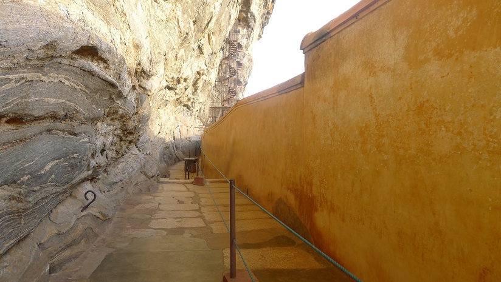

Sigiriya Mirror Wall
King Kassapa had the famous kat bitha, or mirror wall,
made to suit his decadent
tastes. The wall of the gallery
is made of brick, with a shiny, reflective coat of egg
white
wash and porcelain. Many believe that this reflective surface
was designed to help
the king see his reflection as he
passed through.
" style="width:100%" onmouseover="myFunction(this);" >

![<b>Sigiriya Citadel Rock</b>
<p>Referred by locals as the Eighth Wonder of the World this <br>ancient palace and fortress
complex has significant <br>archaeological importance and attracts thousands of tourists every
year.<br> It is probably the most visited tourist destination of Sri Lanka.<br>Sigiriya rock
plateau, formed from magma of an extinct volcano,<br> is 200 meters higher than the
surrounding jungles.Its view astonishes <br>the visitors with the unique harmony between
the nature<br> and human imagination.
</p>](Srock.jpg)
![<b>Sweeping Stroke Paintings</b>
<br><p>On the western section of the rock, about 100 meters from<br> the base, are the fifth
century frescos of the Sigiriya maidens. <br>There are currently 50 frescos remaining, but
originally there <br>were 250 depicting 500 maidens. This fact was uncovered thanks<br> to the
graffiti along the kat bitha (mirror wall) describing the scenes.<br> It is unclear whether
the king’s daughters or sizeable harem were<br> the subjects of these vibrant frescos of
bare-breasted women, but<br> the fact that they have been popular focal points at Sigiriya
for<br> centuries is inarguable (think ancient Playboy).
<br>
</p>](sithuwam.jpg)
![<b>Sigiriya Lion Claws</b>
<br><p>After exploring Sigiriya's intricate gardens, caves, <br>and infamous mirror wall,
visitors will finally arrived at the <br>Lion Mountain platform :a stairway flanked by a
pair of <br>ominous clawed lion paws.As is true for other cultures around <br>the world, the
ancient Sinhalese conceptualized the lion <br>as a symbol of power and strength.
The stairway once directed royals<br> into the mouth of the beast, but unfortunately the
paws of the great <br>Sigiriya lion are all that remain today.
</p>](Slion.jpg)